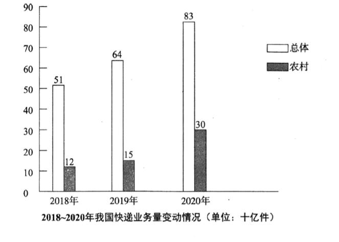

yy-2022-48
Write an essay based on the following chart. In your writing, you should
1) interpret the chart, and
2) give your comments.
You should write about 150 words on the ANSWER SHEET. (15 points)

According to the bar chart, the volume of express parcels across China surged from 51 billion pieces in 2018 to 83 billion pieces in 2020. When it comes to the rural areas, the trend is particularly striking, which doubled to 30 billion pieces in the last one year alone.
This chart reveals the robust growth of China's express delivery sector. It is closely tied to the e-commerce boom. To be specific, as livestreaming e-commerce takes off amid the pandemic, people sheltered at home are more inclined to purchase online, thereby giving impetus to the delivery business. Moreover, the government has made sustained efforts to improve infrastructure in the countryside, which paves the way for the extension of courier services to the vast rural markets. Add to this the increased efficiency of logistics, and it is hardly surprising that the volume of express delivery should continue to soar in recent years.
The burgeoning courier sector not only facilitates people's lives, but also provides a massive boost to the country's economy. More significantly, by opening up new employment opportunities for rural residents and promoting sales of agricultural produce, it makes a huge contribution to rural revitalization.
本题讲解：双序列柱状图——「总量连涨 + 农村翻倍」两条线描图与三层析因（2022 大作文）
答案（参考范文口径）：According to the bar chart, the volume of express parcels across China surged from 51 billion pieces in 2018 to 83 billion pieces in 2020. When it comes to the rural areas, the trend is particularly striking, which doubled to 30 billion pieces in the last one year alone. This chart reveals the robust growth of China's express delivery sector. It is closely tied to the e-commerce boom. To be specific, as livestreaming e-commerce takes off amid the pandemic, people sheltered at home are more inclined to purchase online, thereby giving impetus to the delivery business. Moreover, the government has made sustained efforts to improve infrastructure in the countryside, which paves the way for the extension of courier services to the vast rural markets. Add to this the increased efficiency of logistics, and it is hardly surprising that the volume of express delivery should continue to soar in recent years. The burgeoning courier sector not only facilitates people's lives, but also provides a massive boost to the country's economy. More significantly, by opening up new employment opportunities for rural residents and promoting sales of agricultural produce, it makes a huge contribution to rural revitalization.
第 0 步：先立机制——图上有两条柱，描图就有两条线；评论 = 点破现象 → 三层析因 → 意义升华
指令两问：interpret the chart（描图）+ give your comments（评论），评论 = 点破现象 → 析因 → 阐述意义，全文落成三段。本图与 2021 年的单序列柱状图机制不同：横轴是年份（2018—2020）、每个年份并立两根柱（全国总体 / 农村）——时间序列 + 双序列对比。描图的任务因此有两条：①总量三年连涨的趋势；②农村序列的「翻倍」突袭。两条线各自生长出评论段的析因与意义——机制立住了，每一段都是在往这两条线上填内容。
第 1 步：读图——标题定对象，数据排两条线
- 标题「2018—2020 年我国快递业务量变动情况（单位：十亿件）」给出对象（我国快递业务量）、时段（三年）与单位（十亿件）。
- 两条序列三年数据：
| 年份 | 全国总体 | 农村 |
|---|---|---|
| 2018 | 51（510 亿件） | 12（120 亿件） |
| 2019 | 64（640 亿件） | 15（150 亿件） |
| 2020 | 83（830 亿件） | 30（300 亿件） |
- 两处运算：总量 51 → 83，三年增逾六成，连年上涨是总趋势；农村 15 → 30，仅 2020 一年就翻倍，增速远超总体——「农村爆发」是本图最 striking 的信息。第一段的描图句、第二段析因二的落点、第三段的意义升华，都从这两条线长出来。
第 2 步：描图段——总趋势一句 + 突出对比一句
- 总趋势句：According to the bar chart, the volume of express parcels across China surged from 51 billion pieces in 2018 to 83 billion pieces in 2020.——surge（激增）定调；from... to... 只取首尾两年报数，三年连涨的趋势压进一句，不逐年机械罗列。
- 突出对比句：When it comes to the rural areas, the trend is particularly striking, which doubled to 30 billion pieces in the last one year alone.——When it comes to 完成第一序列到第二序列的切换；doubled（翻番）是比「增长 100%」更醒目的表达；in the last one year alone（仅过去一年）加码强调陡增；which 引导非限制性定语从句回指 trend。
- 只报总序列漏掉农村、或六个数字从头念到尾，都是描图段不合格的写法——双序列图两条线都要描，且要有重心。
第 3 步：现象句 + 析因一（电商直播）——as + thereby doing 压句
- 现象句：This chart reveals the robust growth of China's express delivery sector. It is closely tied to the e-commerce boom.——reveal 点破现象，robust growth（强劲发展）总括两条线；be closely tied to（与……密切相关）一句把原因指向电商繁荣。
- 展开：To be specific, as livestreaming e-commerce takes off amid the pandemic, people sheltered at home are more inclined to purchase online, thereby giving impetus to the delivery business.——to be specific 展开具体机制；take off（迅速走红）替代 become popular；sheltered at home 过去分词后置定语压掉定语从句；thereby giving impetus to（从而推动）分词结果状语压掉结果句——一句串起「直播走红 → 宅家网购 → 快递增长」的因果链。
第 4 步：析因二（农村基建）+ 析因三（物流效率）——which 定从与祈使 + and 句式
- 析因二：Moreover, the government has made sustained efforts to improve infrastructure in the countryside, which paves the way for the extension of courier services to the vast rural markets.——sustained efforts（持续努力）+ 现在完成时；which paves the way for（为……铺平道路）定语从句点明后果。这条因正好落在农村序列上——农村为什么翻倍？基建完善、网点下沉。
- 析因三：Add to this the increased efficiency of logistics, and it is hardly surprising that the volume of express delivery should continue to soar in recent years.——Add to this..., and... 固定句式（此外再加上……，那么……就不足为奇）：祈使分句补充另一因素，and 后接结果分句；hardly surprising 双重否定收出「增长是必然」的语气。三个因一齐兜住两条线的增长。
第 5 步：意义段——并列益处 + 乡村振兴升华
- 并列句：The burgeoning courier sector not only facilitates people's lives, but also provides a massive boost to the country's economy.——not only... but also... 并列「个人便利」与「国家经济」两层；burgeoning（迅速发展的）换词回指，避免重复 express delivery。
- 升华句：More significantly, by opening up new employment opportunities for rural residents and promoting sales of agricultural produce, it makes a huge contribution to rural revitalization.——by + 两个动名词并列（创造就业 + 促进农产品销售）点出路径；rural revitalization（乡村振兴）把意义落在农村——与描图段「农村翻倍」首尾呼应，第三段就不是泛泛抒情。
第 6 步：语言纪律——预判「怎么不丢冤枉分」
- 时态纪律：描图过去时（surged / doubled）；析因现在时与现在完成时（takes off / has made）；意义现在时。
- 搭配红线：the volume of express parcels（快递业务量）；express delivery sector / courier services（快递行业/服务）；give impetus to；pave the way for；make a huge contribution to；rural revitalization。billion = 十亿，510 亿件 = 51 billion pieces，换算错全篇数据全错。
- 数据表达：首尾报数（from 51 billion in 2018 to 83 billion in 2020）不逐年罗列；农村用 doubled + in the last one year alone 突出陡增；两序列用 When it comes to 切换。
- 回指替代：It / the trend / the burgeoning courier sector 换着回指，避免通篇 express delivery。
易错点：每个失分点对应哪种误解
- 只描总序列漏农村：双序列图两条柱都要描；农村翻倍恰是本图的图眼，漏掉它析因二和意义段都失去落点。（典型误解：把每张柱状图都当单序列处理。）
- 六个数字逐年机械罗列：51→64→83 再加 12→15→30 念一遍，无重心无运算；正确是首尾报数 + doubled 突出陡增。
- billion 换算错误：写成 51 billions 或 510 billion——billion 是「十亿」，且做定语用单数形式 51 billion pieces。
- 析因写成快递员辛苦论：评论现象而非解释现象；数据问的是「增长为何发生」，要从电商、基建、物流三处找因。
- 析因语气错位：图表只给数据不给原因，但宏观背景（电商繁荣、政策投入）是公认事实，可用陈述语气；微观推测才需要 may be 之类的留余地表达——语气分寸错配即扣分。
- Add to this 句式乱用：它是「祈使分句 + and + 结果分句」的固定搭配，Add 后接名词短语（the increased efficiency of logistics），写成 Adding to this... 或漏掉 and 都不成句。
- 意义段泛泛抒情：I think express delivery is very important 一句空话；意义要落到具体路径（就业 + 农产品销售）与具体落点（乡村振兴），并与农村数据呼应。
- doubled 主语错位：doubled to 30 billion 的逻辑主语是农村业务量（the trend），写成 the volume of express parcels across China doubled 就张冠李戴。
记忆锚点：双序列柱状图描图 = 首尾报数写总趋势 + When it comes to 切第二序列 + doubled 突出陡增；析因 = 现象句（reveals robust growth / closely tied to）+ 三层因（直播带货 thereby giving impetus to / 农村基建 which paves the way for / 物流效率 Add to this..., and...）；意义 = not only...but also... + by doing... and doing... → rural revitalization；数据红线 billion = 十亿、51 billion pieces。